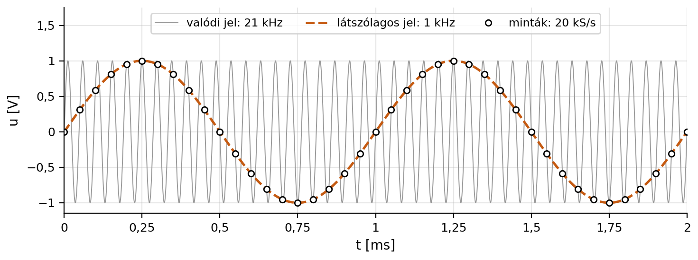
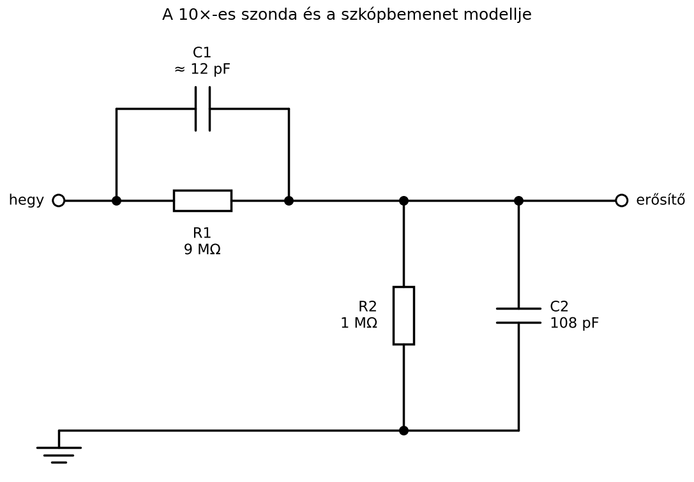
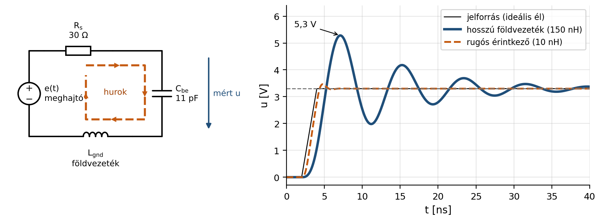
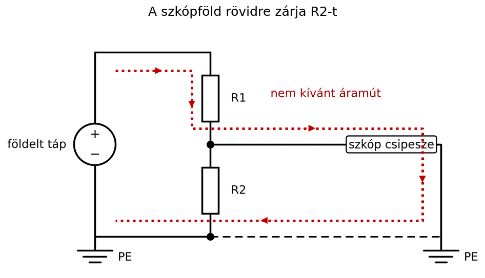

A szenzormodul a szolenoidot 20 kHz-es PWM-jellel (gyorsan ki-be kapcsolt feszültség, a bekapcsolási arány szabja meg az átlagot) vezérli. A multiméter egyetlen átlagszámot mutat. De milyen az él? Mikor kapcsol a vezérlőláb? Van-e a jelen kiugrás? Ehhez oszcilloszkóp (oscilloscope, röviden szkóp) kell, amely a feszültséget az idő függvényében rajzolja ki. A szkóp viszont tud hamis képet is mutatni: egy rosszul beállított szonda vagy egy hosszú földvezeték olyan túllövést „mér”, amely a kapcsolásban nincs is. Megtanulod:
Előzmény: A multiméter és Labortáp, áramkorlát és függvénygenerátor.
A képernyő vízszintes tengelye az idő, a függőleges a feszültség. Mindkét tengelyen osztások vannak (jellemzően 10 vízszintes és 8 függőleges), és azt állítod be, mennyit ér egy osztás: a függőleges érzékenységet (V/osztás) és az időalapot (idő/osztás). Egy periodikus jelet a szkóp újra meg újra felvesz, és a felvételeket egymás fölé rajzolja. Ha minden felvétel máshol kezdődik, a kép „szalad”. A trigger az a feltétel, amely megmondja, melyik pillanathoz igazítsa őket: például „amikor a jel alulról átmegy 1,65 V-on”. Olyan, mint egy fotós, aki minden körben akkor exponál, amikor a futó átlép a célvonalon: a képeken a futó ugyanott van. Az analógia határa: a szkóp nem egyetlen pillanatot rögzít, hanem egy időablakot a triggerpont előtt és után.
Gondolkodj előre: egy 0…3,3 V-os négyszögjelnél a triggerszintet 4 V-ra állítod, „auto” módban. Mit látsz? (A választ a trigger-szakaszban találod.)
Minden csatorna egy bemenet saját érzékenységgel és függőleges pozícióval. A csatolás lehet DC (a teljes jel látszik) vagy AC (egy sorba kötött kondenzátor leválasztja az egyenfeszültségű részt; így pl. egy 5 V-os sín néhány millivoltos hullámossága nagyítható fel). A függőleges felbontás sok alapkategóriás műszernél 8 bit, azaz 256 szint (mintaadat): a jel töltse ki a képernyő nagy részét, különben a lépcsők nagyobbnak látszanak.
A trigger beállításai:
A jósló kérdés válasza: a 4 V-os szintet a 3,3 V-os jel sosem éri el, ezért auto módban a kép szalad, normál módban pedig megáll (vagy üres).
A digitális szkóp a jelet egyenletes időközönként mintavételezi. A mintavételi frekvencia (egysége S/s, minta másodpercenként) és a tárolt minták száma, a memóriamélység , együtt köti meg az időablakot:
ahol az egy osztásra beállított idő, a nevező a teljes képernyőidő (1/s lesz belőle). A képlet addig érvényes, amíg nem éri el a műszer legnagyobb mintavételi frekvenciáját. (mintaadat) mellett 10 µs/osztásnál 100 MS/s, 50 ms/osztásnál viszont csak 20 kS/s. Ha a jel frekvenciájának legalább a kétszeresénél ritkábban mintavételezel, egy nem létező, lassabb jelet látsz (aliasing). A 21 kHz-es jel 20 kS/s-nál 1 kHz-esnek látszik. Részletesen: Mintavétel, kvantálás és ADC.

Gyanús, ha a mért frekvencia az időalap váltásakor megváltozik.
Definíció. A sávszélesség az a frekvencia, amelyen a műszer egy szinuszjel amplitúdóját kb. 70,7%-ra csökkenti (a „−3 dB-es” pont; a decibel: Decibel, átviteli függvény és Bode-diagram).
Definíció. A felfutási idő (rise time) az az idő, amíg a jel a végérték 10%-áról a 90%-ára emelkedik.
Egy gyors él sok magas frekvenciát tartalmaz, ezért a korlátozott sávszélesség lelassítja. Közelítőleg
(1/Hz = s; levezetés: Elsőrendű szűrők, sávszélesség és felfutási idő). Egy 100 MHz-es szkóp a saját magától „végtelen gyors” élt is kb. 3,5 ns-osnak mutatja. A jel, a szonda és a szkóp felfutási ideje közelítőleg négyzetesen adódik össze:
Ha a mérőrendszer -je legfeljebb a jelének negyede, a hiba kb. 3% alatt marad. Egy 5 ns-os élhez tehát legalább -es rendszer kell. A közelítés „szelíd” (túllövés nélküli) átvitelre érvényes.
Továbbvitt eredmény. , és a rendszer felfutási idejei négyzetesen összegződnek. Ezt az Elsőrendű szűrők, sávszélesség és felfutási idő vezeti le, és a Felfutási idő, sávszélesség és távvezetékek alkalmazza.
A szkóp bemenete kb. 1 MΩ, vele párhuzamosan néhány tíz pikofarad, a kábel további közel 100 pF-ot ad. Egy kondenzátor két vezető felület szigetelővel; a tárolt töltés arányos a feszültséggel (, a kapacitás egysége a farad). Feszültsége csak töltés átvitelével változhat (részletesen: Kapacitás, töltés és energia). A 100 pF a gyors éleknél érezhetően terheli a mérőpontot. A 10×-es szonda ezért a hegyénél egy 9 MΩ-os ellenállást és egy kis, beállítható kondenzátort () tartalmaz:

Két osztót látunk egyszerre. Egyenfeszültségen a kondenzátorok nem vezetnek, az ellenállások osztanak:
Egy ideális ugrás pillanatában viszont a sorba kötött kondenzátorokon ugyanaz a töltés halad át, , és a kimenetre a bemeneti ugrás
része jut. Ha a két arány különbözik, a kimenet az ugrás pillanatában -ről lassan (exponenciálisan, időállandóval, lásd RC és RL töltés–kisütés, időállandó) áll be -re. Kis esetén () lekerekített az él (alulkompenzált), nagy esetén kiugrik (túlkompenzált). A két arány pontosan akkor egyenlő, ha , azaz:
Ez a kiegyenlített osztó: minden frekvencián, minden időpillanatban 1/10-et ad (Ω·F = s a két oldalon). A példánkban . A hegyről nézve a szonda kapacitása a két kondenzátor soros eredője, , az ellenállása 10 MΩ. A szkóp bemenetére így tízed akkora jel jut, cserébe a mérőpontot nagyjából tízszer kisebb terhelés éri (a kijelzést a „10×” beállítás szorozza vissza). A szkóp kalibrációs kimenetén, 1 kHz-es négyszögjellel, a szonda állítócsavarjával addig tekered -et, amíg az élek egyenesek.
Továbbvitt eredmény. A szondamodell kiegyenlített osztó, kompenzálási feltétele ; a hegy terhelése kb. 10 MΩ és 10 pF. Az Elsőrendű szűrők, sávszélesség és felfutási idő és a Szűrőtervezés alapjai: rendűség, Butterworth és tűrés erre épít.
A szonda földcsipesze néha 10–15 cm-es vezeték. A vezetékhurok induktivitása (, egysége henry) azt fejezi ki, hogy az áram a mágneses tér miatt nem változhat hirtelen (lásd Mágneses tér és induktivitás); hüvelykujjszabályként kb. 1 nH jut minden milliméter vezetékre. Az és a szonda kapacitása rezgőkör: az energia oda-vissza vándorol közöttük, és az él után a kép cseng (ringing). A frekvencia közelítőleg
és esetén 124 MHz; rövid rugós földérintkezővel (kb. 10 nH) 480 MHz, kisebb amplitúdóval. A levezetés és a csillapítás: RLC tranziens: csillapítás és túllövés.

A modell szerint a 3,3 V-os él hosszú vezetékkel 5,3 V-ig „ugrik”, rövid érintkezővel csak 3,46 V-ig. Egy 100 MHz-es műszer a 124 MHz-es csengést is csillapítaná, tehát a látvány a sávszélességtől is függ.
Továbbvitt eredmény. A földvezeték induktivitása a szonda kapacitásával rezgőkört alkot: , és a hurok rövidítése a megoldás. Ugyanez a hurokgondolat tér vissza a Csatolási mechanizmusok és áthallás és a Tápintegritás és hidegítés alfejezetben.
Az asztali szkópok földcsipesze a legtöbb műszeren a védőföldre (protective earth, PE) kötött (ellenőrizendő: műszerfüggő). Ha a vizsgált kapcsolás maga is földelt (pl. egy földelt számítógép USB-portjáról táplált modul), a nem-föld pontra tett csipesz a PE-n át a kapcsolás földjére köti azt (ha ez a pont a tápsín, teljes zárlat keletkezik):

Szabály: a csipesz csak a kapcsolás földjére kerülhet. A védőföld leválasztása a műszerről tilos és veszélyes. Két földtől független pont közötti feszültséget két csatornával mérsz: mindkét szonda csipesze a GND-n, a hegyek a két ponton, és a szkóp a CH1 − CH2 különbséget számolja. Nagy közös feszültség vagy nagyon kis különbség esetén ez pontatlan; arra differenciálszonda való.
Átlagolás csökkenti a véletlen zajt (csak stabilan triggerelt, ismétlődő jelnél). A kurzorokkal a képernyőn időt és feszültséget olvasol le. Az automatikus mérések (frekvencia, Vpp, felfutási idő) kényelmesek, de nézd meg, mit mérnek: csengő jelnél a „Vpp” a túllövést is tartalmazza. Sok műszernél a sávszélesség korlátozható, ami elrejti a nagyfrekvenciás zajt – és a valódi tüskéket is.
A jel 20 kHz-es (periódusa 50 µs), 0…3,3 V.
Józanész-ellenőrzés a terheléshez: a modul NTC-s mérőpontja -os. 1×-es szondával (1 MΩ ∥ 108 pF) , 10×-essel (kb. 11 pF) 55 ns, tehát a 10×-es tízszer kevésbé lassítja a jelet; egyenfeszültségen pedig a terhelési hiba (lásd A multiméter) −0,50% helyett −0,05%.
import math
from elkit import transient as tr, units
C2 = 108e-12 # kábel + szkópbemenet (mintaadat)
C1 = 1e6 * C2 / 9e6
print("C1 =", units.fmt(C1, "F"), " szondakapacitás:", units.fmt(C1 * C2 / (C1 + C2), "F"))
for c1 in (6e-12, C1, 20e-12):
ugras = 10 * c1 / (c1 + C2)
print(f"C1 = {c1 * 1e12:4.1f} pF: az ugrás pillanatában a kijelzés {ugras:.3f}-szoros")
t_sys = math.hypot(0.35 / 100e6, 0.35 / 100e6)
print(f"rendszer t_r = {t_sys * 1e9:.2f} ns; 20 ns kijelzett → jel "
f"{math.sqrt(20e-9**2 - t_sys**2) * 1e9:.1f} ns")
for t_div in (10e-6, 1e-3, 50e-3):
print(f"{units.fmt(t_div, 's'):>6}/oszt.: f_s = {units.fmt(10000 / (10 * t_div), 'S/s')}")
for l_gnd in (150e-9, 10e-9):
c = tr.Circuit().add_vsource("U1", "s", "0", tr.step(0.0, 3.3, 2e-9, 2e-9))
c.add_resistor("R1", "s", "a", 30.0).add_inductor("L1", "a", "b", l_gnd)
c.add_capacitor("C1", "b", "0", 11e-12)
u = c.simulate(40e-9, 0.02e-9).v("b")
f0 = 1 / (2 * math.pi * math.sqrt(l_gnd * 11e-12))
print(f"L = {l_gnd * 1e9:3.0f} nH: f0 = {units.fmt(f0, 'Hz')}, csúcs = {u.max():.2f} V")C1 = 12 pF szondakapacitás: 10.8 pF
C1 = 6.0 pF: az ugrás pillanatában a kijelzés 0.526-szoros
C1 = 12.0 pF: az ugrás pillanatában a kijelzés 1.000-szoros
C1 = 20.0 pF: az ugrás pillanatában a kijelzés 1.562-szoros
rendszer t_r = 4.95 ns; 20 ns kijelzett → jel 19.4 ns
10 µs/oszt.: f_s = 100 MS/s
1 ms/oszt.: f_s = 1 MS/s
50 ms/oszt.: f_s = 20 kS/s
L = 150 nH: f0 = 124 MHz, csúcs = 5.28 V
L = 10 nH: f0 = 480 MHz, csúcs = 3.46 Velkit
tranziens-megoldójával a földhurok induktivitását 5 és 200 nH között (2
ns-os forrásél, 30 Ω, 11 pF), és add meg a legnagyobb vizsgált
-t,
amelynél a túllövés 10% alatt marad. Mit jelent ez a gyakorlatban?A szkóp V/osztás és idő/osztás beállításokkal rajzolja a jelet; a trigger (forrás, szint, él, mód) teszi a periodikus jelet stabillá. ; ritka mintavételnél aliasing. A mérőrendszer felfutási ideje , és négyzetesen adódik a jeléhez. A 10×-es szonda kiegyenlített osztó: esetén minden időben 1/10-et ad, és a mérőpontot kb. 10 MΩ ∥ 10 pF terheli. A földvezeték induktivitása a szonda kapacitásával frekvencián cseng, ezért a hurok legyen rövid. A szkóp földje védőföldelt lehet: csipesz csak a GND-re, két pont között CH1 − CH2. Továbbvitt eredmények: szondamodell, – kapcsolat, a földhurok mint mérési hiba.
1. Négy periódus 4 ms, 400 µs/osztás kellene; az 1–2–5 sorból 500 µs/osztás (5 periódus). Függőleges: 500 mV/osztás, a jel 6,6 osztás.
2. , a kettő együtt . A jel . A korrekció nagy (a mérőrendszer a mért érték 82%-a), ezért az eredmény csak nagyságrendi: gyorsabb műszer kell.
3. , ; a hegy kapacitása .
4. , periódusonként 2,5 minta: a 12,5 µs-os impulzus rövidebb a 20 µs-os mintaköznél, egyes impulzusok teljesen kimaradnak, a kép hamis. 50 mintához , azaz .
5. . A 100 MHz-es műszer ezt erősen csillapítja (a sávszélesség fölött van), ezért kisebb vagy alig látható csengést mutat: a hiba elrejtve, de a mérés ettől nem lesz pontos.
6.
for l_nh in (5, 10, 15, 20, 30, 50, 100, 200):
c = tr.Circuit().add_vsource("U1", "s", "0", tr.step(0.0, 3.3, 2e-9, 2e-9))
c.add_resistor("R1", "s", "a", 30.0).add_inductor("L1", "a", "b", l_nh * 1e-9)
c.add_capacitor("C1", "b", "0", 11e-12)
u = c.simulate(60e-9, 0.02e-9).v("b")
print(f"{l_nh:3d} nH: túllövés {100 * (u.max() / 3.3 - 1):5.1f} %") 5 nH: túllövés 1.1 %
10 nH: túllövés 5.0 %
15 nH: túllövés 9.2 %
20 nH: túllövés 13.9 %
30 nH: túllövés 22.7 %
50 nH: túllövés 35.5 %
100 nH: túllövés 51.9 %
200 nH: túllövés 65.1 %A vizsgált értékek közül 15 nH-ig marad 10% alatt: ez néhány centiméter helyett nagyjából 1,5 cm-es földutat jelent, vagyis rugós érintkezőt vagy a mérőponthoz közeli földpontot.